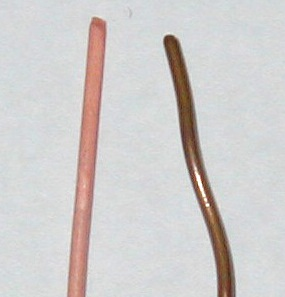

Wiring decisions
Solar wire size: how to choose the right gauge
If solar wiring feels intimidating, you’re not alone. The goal isn’t to memorize tables — it’s to make one safe decision: choose a wire size that keeps heat and voltage drop under control for your circuit.
Key takeaways
- Start by identifying the circuit: PV wiring, controller-to-battery, or battery-to-inverter.
- Wire size is driven by max amps and run length, not “average watts.”
- Higher system voltage usually reduces current, which often means smaller cable and less voltage drop.
The real goal (safety + performance)
The reader is the hero here: you want a solar system that works reliably without hot wires, nuisance shutdowns, or mystery power loss. This guide is the “plan” that gets you there.
Good wire sizing = low heat + manageable voltage drop + compatible connectors and protection.

{kind=link}
Two rules that prevent most mistakes
Rule 1: current (amps) drives heat risk
For a given load, lower voltage means higher current. High current pushes you toward thicker cable and higher-rated lugs, bus bars, fuses, and breakers.
Rule 2: distance drives voltage drop
The longer the run (especially on high-current battery cables), the more voltage you lose in the wire. Too much drop can look like “the system is underperforming” when the real issue is wiring.
A simple 4-step decision flow (what to measure first)
Step 1: identify the circuit
- PV wiring: panels to charge controller (often higher voltage, lower current)
- Controller-to-battery: charging current to the battery bank
- Battery-to-inverter: usually the highest current wiring in the system
Step 2: estimate max amps (use labels, not guesses)
Use the equipment specs as your “source of truth.” For example, charge controllers list max output current, and inverters list continuous power and surge behavior.
Step 3: measure one-way run length
Don’t assume a tidy layout. Measure the real path the cable will take (including routing), and remember that long runs are most painful on high-current circuits.
Step 4: set a conservative voltage-drop target
If you want a simple rule for planning (not a code substitute), aim to keep voltage drop “small enough that it doesn’t change equipment behavior.” The battery-to-inverter run is often where people tighten this target because voltage sag can trigger low-voltage shutdowns.
Quick voltage drop example
Example: a 1,000W inverter on a 12V battery draws roughly 90A to 100A. A long cable run at that current can create noticeable voltage sag.
If the inverter has a low-voltage cutoff, that sag can trigger shutdowns even when the battery is not truly empty. Larger cable or higher system voltage reduces the drop.
12V vs 24V vs 48V: why higher voltage usually simplifies wiring
If you keep power roughly the same, higher voltage means lower current. Lower current typically means thinner wire, less voltage drop, and smaller (and sometimes cheaper) protection hardware. That’s why many systems “graduate” to 24V or 48V as power needs grow.
What “DC-rated” means (a quick checklist)
- Cable type: use appropriate PV wire for arrays and appropriate battery cable for high-current battery circuits.
- Connectors: match the cable type and size; avoid “almost fits” lugs.
- Protection: use fuses/breakers/disconnects explicitly rated for your DC voltage and current.
- Heat: cable that runs warm under normal load is a warning sign, not “normal.”
Routing, protection, and environmental factors
Wire size is only part of safety. Route cables away from sharp edges, protect them in conduit where needed, and keep them clear of hot surfaces.
Outdoor PV wire should be UV-rated and weather-resistant. Indoor battery cables should be protected from abrasion and strain.
Wire sizing checklist
- Confirm max current: use equipment labels and real peak loads.
- Measure the real run: include routing and bends.
- Set a voltage drop target: tighter for inverter and battery circuits.
- Check connector fit: lugs and terminals must match wire size.
- Match protection: fuses and breakers must match the wire capacity.
When to call a professional
If you are unsure about code requirements, conductor types, or safe routing, consult a licensed electrician. This is especially important for grid-tied systems or high-voltage arrays.
Choosing wire type
Use PV wire for outdoor array runs and flexible battery cable for high-current battery circuits. Using the right wire type is just as important as choosing the right gauge.
Connector fit check
Verify that your lugs, terminals, and breakers accept the selected wire size. Mismatched hardware can loosen and overheat.
Route planning tip
Plan cable paths before cutting wire. Extra length adds cost and voltage drop over time.
If the shortest path crosses hot equipment or sharp edges, choose a safer route and upsize the wire to offset the added length.
Common wire-sizing mistakes (and how to avoid them)
- Sizing from average watts: wire is stressed by peak current, not a daily average.
- Forgetting inverter surge: surge can matter on the battery-to-inverter side.
- Ignoring distance: long runs create voltage drop that looks like “low solar output.”
- Mixing cable types: PV wire and battery cable solve different problems.
- Using non-DC-rated hardware: DC interrupt ratings matter for safety.
FAQ
Is PV wire the same as battery cable?
No. PV wire is designed for outdoor array wiring. Battery cable is built for high current and flexible routing on the battery side.
What voltage drop is acceptable for solar?
It depends on the circuit and equipment behavior. Keep drop low enough that it does not cause shutdowns or lost production.
Why does 12V require thicker wire than 24V or 48V?
For the same power, lower voltage means higher current. Higher current drives thicker cable and higher-rated protection.
Can I oversize wire?
Often yes, and it is a common way to reduce voltage drop and improve reliability. Limits are cost and connector compatibility.
Do I size for continuous watts or surge?
Use the maximum current the circuit can realistically see. For inverters, surge can be relevant depending on your loads.
Does wire size affect efficiency?
Yes. Thicker wire reduces resistance, which reduces voltage drop and heat loss.